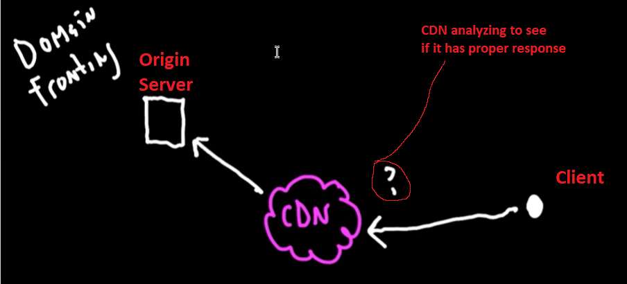

CDN - Content delivery network
CDN Redirectors - - use valid SSL certificate
- ~often time the CDN requires one
- Allow HTTP POST and HTTP GET verbs- - Consider HTTP-GET only C2
- - Disable all cache options
- ~ giving a better chance to redirect to your cobalt server
- - be aware of transformed requests
- ~ Cloudfrontlikes to rearrange the cookie value
- ~ if youre beacon Malleable c2 profileis using the cookie header to send data back to cobalt strike
- ~ possible to break contractbetween Malleable c2 profile the beacon payload and the beacon controller
multiple different origin servers Per CDN- some of the origin servers are highly trusted
- we can become a customer too ;)
What is an Origin Server?- the CDN receives a client from so call "client"
- if the CDN analyzes to see if it has the correct response in the cache
-
- The CDN will reach out to the customer server in order to pull the content
- it then adds the info into the cache

SETUP TO NOT CACHE- we need every request to reach us
- caching "remembers" and will fuck us bc we dont want it to